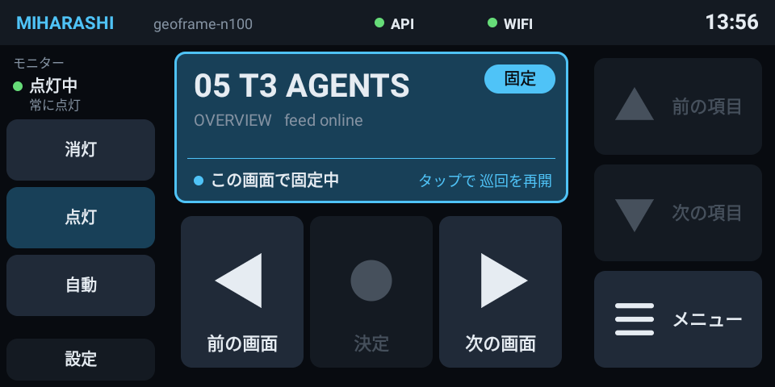

モニターの消灯・点灯・自動
現在の状態(点灯中・消灯中)と、Home Assistant の切り替え設定(自動 / 常に点灯 / 常に消灯)を表示します。画面操作用のボタンとは離して、左側に縦に並べています。
01 / Panel
画面の切り替えも、巡回の固定も。
メニューから画面を直接選べます。

現在の状態(点灯中・消灯中)と、Home Assistant の切り替え設定(自動 / 常に点灯 / 常に消灯)を表示します。画面操作用のボタンとは離して、左側に縦に並べています。
表示中の画面名、ページ番号、写真が何枚目かを本体から取得します。情報が 5 秒を超えて更新されなければ STALE、15 秒を超えると OFFLINE と表示します。
写真の画面なら「前の写真・次の写真」、メニューを開くと「上を選ぶ・移動・閉じる」。今使えないボタンは灰色になり、押しても操作を送信しません。
右下の「メニュー」を押すと、中央に画面の一覧を表示します。項目をタップするだけで、その画面に切り替わります。
中央の画面表示部をタップすると、巡回を止めて固定します。固定中は青い枠と「固定」の表示が目印です。もう一度タップすると、次の画面へ進んで巡回を再開します。操作によって一時停止したときは、再開までの残り時間も表示します。
操作が本体に届くと、音と振動で知らせます。送信に失敗したときはボタンが赤く点滅し、自動で再送することはありません。
本体との通信状態と Wi-Fi の接続状態を表示します。通信が切れても自動で再接続を試みます。
操作盤に 3 分間触れなければ、画面を真っ黒にしてバックライトを最小にします。画面に触れると元の明るさに戻り、最初のタッチではボタンは動作しません。焼き付きや残像を防ぐための仕様です。
端末の起動時やアプリの更新時に、自動で前面に表示されます。スワイプのみのロック画面よりも手前に出ます。
巡回の固定・再開には、本体で自動巡回を有効にし、巡回操作に対応したバージョンを使う必要があります。モニターの操作には Home Assistant との連携が必要です。
02 / Transport
同じ条件で並べて比べ、
ネットワーク API を選びました。
手元で本体の状態を確認できることと、アプリの導入や更新が簡単なことから、Wi-Fi 経由の API を選びました。詳しい比較は設計書にまとめています。
03 / How it connects
API でできるのは、キー操作、画面選択、巡回とモニターの切り替え、状態の取得だけです。設定で有効にしない限り待ち受けは開始せず、0.0.0.0 は指定できません。パネルの通信が途切れても、キオスクには影響しません。
priv-app にせず、ROM も変更しません。Kotlin で書いた依存ライブラリのない小さなアプリで、ソースコードは miharashi-panel にあります。
04 / Phases
v0.2.0 を実機で使用中。
画面選択と巡回操作に対応しています。
接続方式の比較、API 案、パネル画面案、単体アプリの振る舞い。
キーの注入、/status、SSE、トークン、レート制限。LAN の別の端末から curl で確認。
画面の切り替え、現在の画面の表示、自動起動。モニターの操作と操作盤の自動消灯にも対応。
項目移動、メニューからの画面選択、画面に応じたボタンの説明、巡回の固定・再開。
夜間の時刻に応じた減光は作らず、触らなければ操作盤を暗くする自動消灯で代替します。
05 / FAQ
作っている側が、
聞かれそうだと思った質問です。
960×480 の横長画面が机に置く操作盤にちょうどよく、Android 化すれば普通のアプリが動くからです。Miharashi 専用の単体アプリとして全画面で使い、ほかの用途との併用は想定していません。
Miharashi 側の変更が不要という利点はあります。しかし Echo を BLE 周辺機器にするには、ROM の変更(priv-app、feature 宣言)や署名鍵の管理が必要で、更新後にペアリングをやり直す必要が生じる可能性があります。手元で状態を確認することもできません。設計書の付録に「もし実装するなら何が必要か」をまとめています。
キオスクの中だけでは切り替えません。キオスクが Home Assistant の設定項目(input_select)を書き換えます。こうすることで Home Assistant の画面とパネルの表示が一致し、再起動しても設定が保たれます。
初期設定では無効で、有効にする場合も Bearer トークンと LAN 内の 1 つのインターフェースだけに制限されます。キー操作、画面選択、巡回とモニターの切り替え、状態の取得だけに用途を限定しており、任意のコマンドは実行しません。
最後の更新から 5 秒を超えると STALE、15 秒を超えると OFFLINE と表示します。最後の状態を薄く残したまま、再接続を試み続けます。キオスク側の動作には影響しません。
端末の起動時に自動で前面に出て、/status を再取得します。再接続が完了すると、本体の現在の状態を表示します。
操作盤に 3 分間触れなければ画面を真っ黒にして、バックライトを最小にします。この時間は設定で変更でき、0 に設定すれば消灯しません。
同じ API を利用するため、ブラウザー向けの小さな操作ページを作ることも可能です。現在は Echo 向けのアプリのみを提供しています。
Read more
接続方式の比較、API、パネル画面、単体アプリの振る舞い、段階と未検証事項をまとめています。